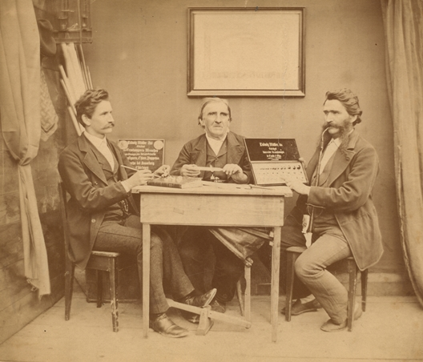
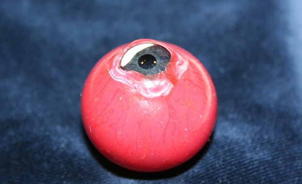

Lecture & Opening Reception
May 28, 2015, 3 – 5 pm
Lecturer: Robert S. Sherins, MD (UCSF, School of Medicine, Class of 1963)
This event is free and open to the public. Light refreshments will be provided.
REGISTRATION REQUIRED: tiny.ucsf.edu/lecture528
Lange Room, 5th Floor, UCSF Library – Parnassus
530 Parnassus Ave, SF, CA 94143
According to the United States Eye Injury Registry, each year there are more than 2.5 million eye injuries, from which 50,000 people permanently lose all or part of their vision, often leaving them severely disfigured. Through the centuries there had been many attempts to create safe, cosmetically pleasing and comfortable ocular prostheses. However, past devices were not designed well enough, fit poorly due to the gross sizing of the prosthetic samples and most of them were certainly irritating due to the use of unsuitable materials that were available at the time.

Illustrations for Hypoblephara (top) and Ekblephara from a book by Ambroise Paré, “The workes of that famous chirurgion Ambrose Parey…,” 1649, p. 576-577. The digital copy of this book is accessible online through the Medical Heritage Library and the original can be viewed at the UCSF archives.
Often called the “father of ocular prosthesis,” French surgeon Ambroise Paré in 16th century invented a device (Ekblephara) consisting of a leather-covered metal base with a painted eye, lid and lashes that was worn over the eyelid. Later on, Paré developed a metal accessory (Hypoblephara eye) that was inserted under the eyelid into the socket over the remaining atrophic eye.
Ludwig Müller-Uri (center) with his sons Albin and Reinhold, ca. 1875. Courtesy of Museum of Glass Art Lauscha.
Modern methods of creating ocular prostheses can be traced to the ingenuity of Ludwig Müller-Uri, a Glasbläser (glassblower) from Lauscha, Province of Thuringia, Germany. The town’s craftsmen also were known for their Christmas glass decorations, glass marbles, utilitarian housewares and doll’s eyes. After training with Prof. Heinrich Adelmann, an ophthalmologist in Würzburg, Müller-Uri became an “Augenprothetik” (prosthetic eye-maker) or ocularist. He improved the artificial eyes by individually fitting each prosthetic. Müller-Uri created the iris details using special tools to apply the pigments he blended to most realistically resemble the natural eye. By 1835, he began using a better quality glass from the local factory. It was not until 1885 that the best cryolite glass became available, which was crucial for the patient’s tolerance of the prosthesis since they became lightweight, corrosion-resistant and more lifelike. It became the standard material for making ocular prosthetics and is still used in Germany, whereas acrylic plastic has replaced cryolite glass in the U.S.
The Müller-Uri family working with the ophthalmologist from the Netherlands, Hermann Snellen designed the “Snellen eye” or “Reform-Auge” (“reform eye”) – prosthesis that consists of two connected shells with a hollow space between them and that can be worn by a patient with the enucleated eye.

Left to right: ocularists: Phillip Danz of Sacramento and William Danz of San Francisco, and Dr. Robert Sherins, ophthalmologist, UCSF School of Medicine Alumnus Class of 1963 holding the Danz collection of ocular pathology specimens during their visit to the UCSF Archives and Special Collections in January, 2015.
During the 1880s, Amandus Müller manufactured approximately 13 eye-kits consisting of ocular pathology specimens – the hand-blown glass eye models depicting diseases. He sold the kits to European medical schools where they were used as teaching aids. Amandus Müller was a grand uncle of Gottlieb Theodore Danz, Sr. In 1915, Gottleib T. Danz, Sr. immigrated with his family to New York and brought one of his uncle’s kits to America. Later on, he moved his office to San Francisco. After the death of Gottlieb T. Danz, Sr., his widow gave that kit to her grandson, Phillip Danz (also an ocularist). In 1963, Phillip donated the kit to Professor Michael Hogan, MD, then Chairman of the UCSF Ophthalmology Department. Eventually the kit was given to the UCSF Archives, where it remains preserved today.
Specimen #34 from the Danz ocular pathology collection. It shows massive traumatic scleral and corneal lacerations, dislocation of the entire lens, severe inflammation and herniation of the vitreous gel.
This beautiful collection was exhibited several times during the past 50 years. However, many historic details about this donation were lost. The purpose of the upcoming lecture and comprehensive exhibit is to use this unique artifact to tell the story of family traditions continued through the centuries on two continents. Through partnership with several members of the Danz family – ocularists: Phillip Danz of Sacramento; William Danz of San Francisco; and William Randy Danz of Ridgewood, New Jersey; as well as the author/lecturer, Dr. Robert Sherins, ophthalmologist, UCSF School of Medicine Alumnus Class of 1963; and UCSF archivist, Polina Ilieva, this exhibit will demonstrate the evolution of skillful craftsmanship of Müller-Uri and Danz families, as well as the science and art of ocular prosthetics. The UCSF Library is grateful to the Danz Family and Dr. Sherins for their continuing support.


{kind=link}
{kind=link}
{kind=link}